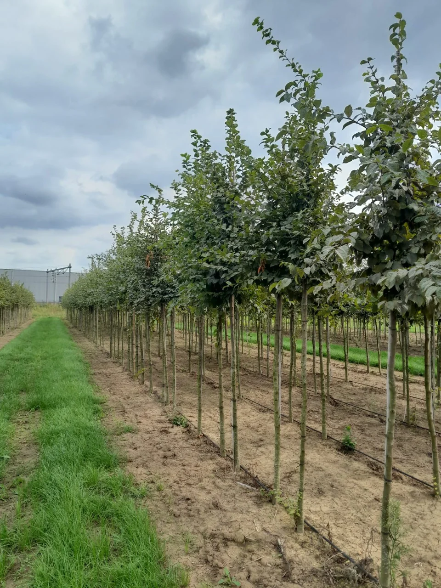
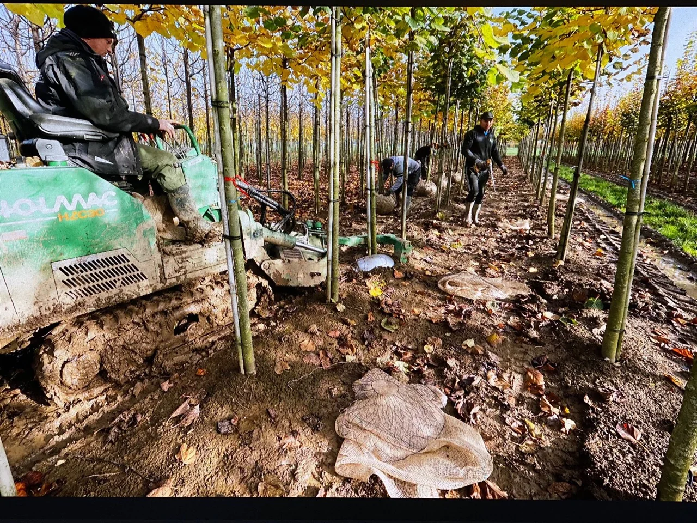
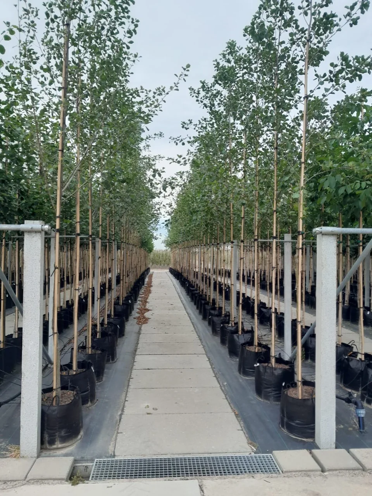
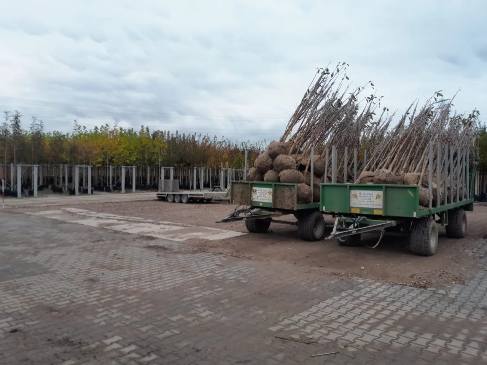
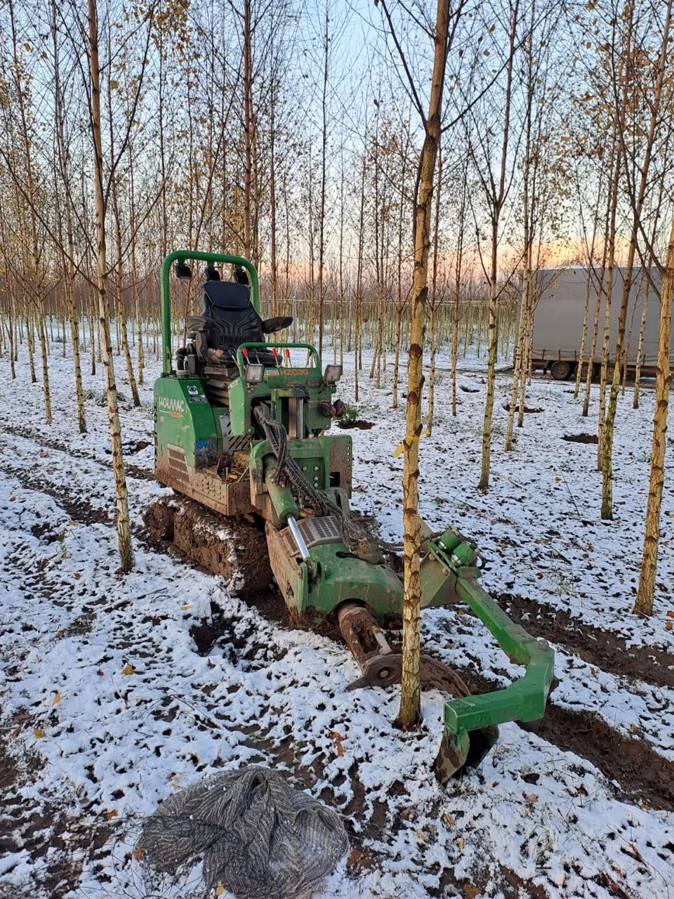
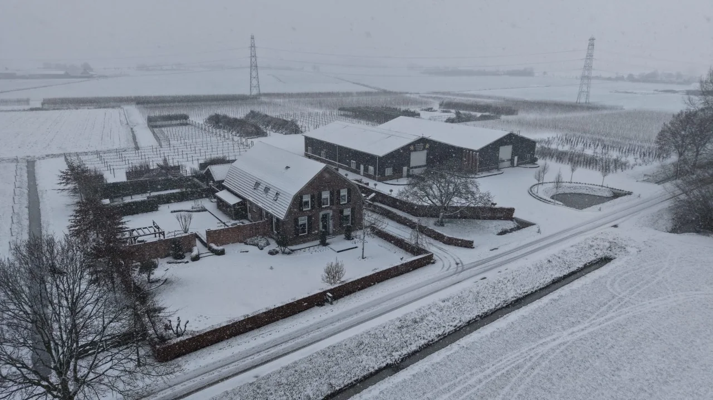

BOOMKWEKERIJ & LOONBEDRIJF · HERVELD
Sterk
geworteld.
Klaar voor morgen.
Mooie bomen. Met aandacht gekweekt, in de vollegrond en in container. En mensen die hun afspraken nakomen. Dat is R. Verwoert.
Ontdek onze teelt
2002VOOR GROEI

KWEKEN. VERZORGEN. LEVEREN.
Ruimte voor groei.
Laan- en sierbomen, vormbomen, fruitbomen en meerstammige bomen. Ontdek ons assortiment in pot en in de vollegrond.
Boomkwekerij
Sterke bomen, gekweekt op de vruchtbare Betuwse klei. Met zorg, van de eerste aanplant tot het rooien.
Ontdek onze boomkwekerijContainerteelt
Bomen in pot en plantzak. Zorgvuldig geteeld, met meer mogelijkheden voor het moment van levering.
Bekijk onze containerteelt
03
Totaal
leverancier
Een compleet beplantingspakket voor hoveniers en groenaanleggers. Eén aanspreekpunt, korte lijnen.
Bespreek uw beplantingsplan
ONTDEK ONS ASSORTIMENT

WE ZOEKEN EEN COLLEGA
Machinist
Boomkwekerij.
Graag buiten, op de machine en tussen de bomen? Kom werken in ons kleine, gezellige team.
- Fulltime
- Herveld e.o.
DE MENSEN ACHTER VERWOERT
Afspraak
is afspraak.
Een hart voor groen.
Een nuchtere kijk op werk.
Wat in 2002 begon met een perceel in Dodewaard, groeide uit tot een veelzijdige boomkwekerij in de Betuwe. Sinds 2010 kweken we ook bomen in container.
Vandaag brengen we teeltkennis en een enthousiast team samen. We denken mee, steken de handen uit de mouwen en houden de lijnen kort.

EEN BLIK OP ONS BEDRIJF
Onze teelt, van dichtbij.
Van jonge groei tot bomen klaar voor levering. Neem een kijkje op de kwekerij, in ieder seizoen.
GOEDE PLANNEN BEGINNEN MET EEN GESPREK
Zullen we
kennismaken?
Een vraag over onze bomen, de levering of uw beplantingsplan? Bel of mail ons. We maken graag kennis.
Stuur ons een e-mail